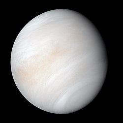

(點擊圖片開啟 NASA 3D 互動模型)
🌡️ 基本概覽
| 類型 | 類地行星 |
|---|---|
| 平均直徑 | 約 12,104 km (地球的姐妹星) |
| 軌道距離 | 約 0.72 AU |
| 自轉週期 | 約 243 個地球日 (比一年還長！) |
| 公轉週期 | 約 225 個地球日 |
| 自轉方向 | 逆向自轉 (自東向西) |
| 平均表面溫度 | 約 464°C (太陽系最熱) |
| 大氣壓力 | 約地球的 92 倍 |
🔍 關於 金星 (Venus)
金星常被稱為地球的「姐妹星」，因為它們的大小與質量非常接近。然而，金星擁有極其濃厚的大氣層，其中 96% 是二氧化碳，這導致了失控的溫室效應，使其表面溫度甚至高於離太陽最近的水星。
在地科學習中，金星的「逆向自轉」和「一日長於一年」是兩大重點。此外，金星的大氣層中充斥著硫酸雲，反射率極高，因此它也是從地球上觀察到最亮的行星（晨昏星）。